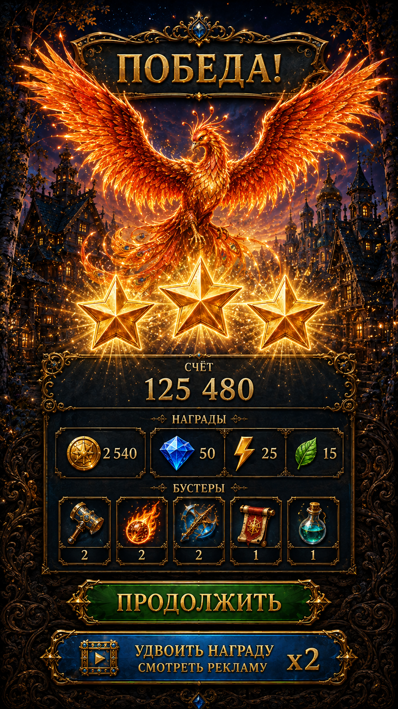

Victory reference selectionVictory — reference comparison
The two local originals have different layouts. Select one below to compare with the fresh native Unity baseline.
Baseline: 20 targeted Unity checks passed. No redesign or new Scenario request yet. Assessment
